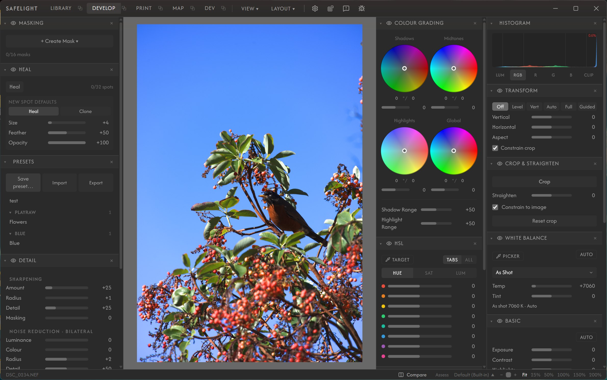
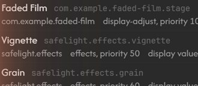
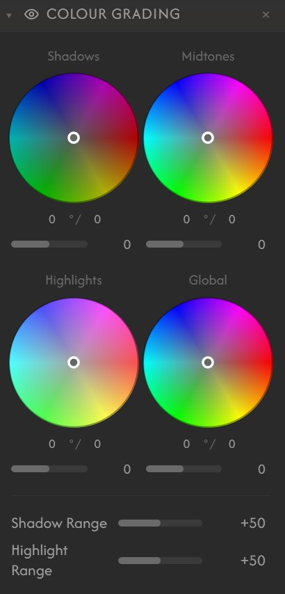
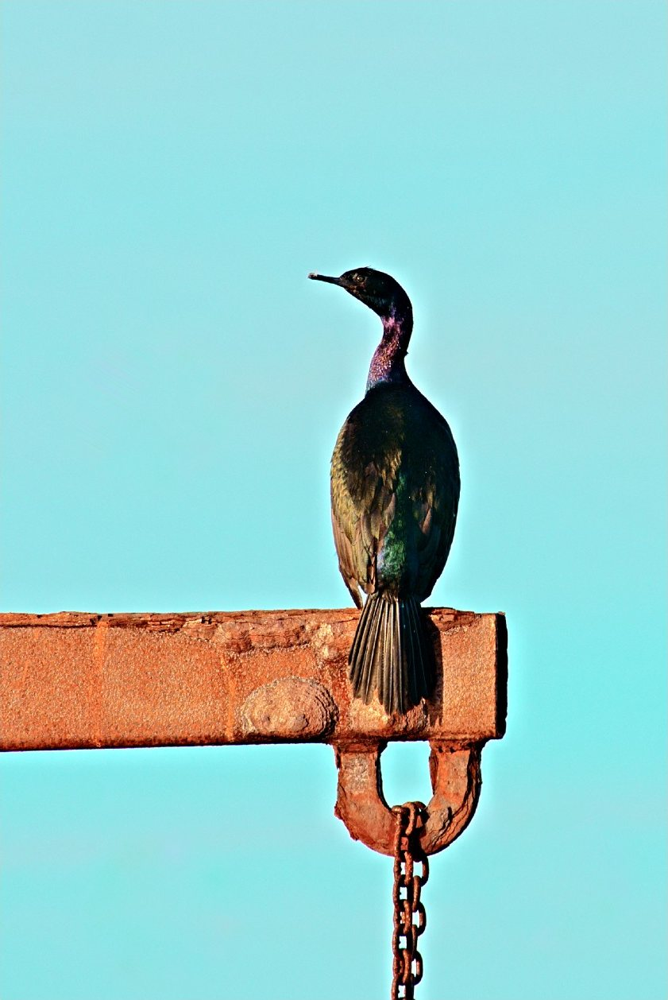
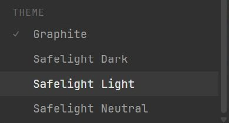

GPU stages
registerProcessingStage
GLSL in any of eight phases, with passes, textures, masks and priorities.
Safelight is a RAW editor built as a lean core plus extensions. Panels, GPU stages, display transforms, decoders and export steps all load through one public API, the same one the built-in tools use. Keep your repo, your licence and your name on it.
TypeScript · GLSL · React · GPL v3 core

Your panelexport function activate(api) { api.registerProcessingStage({ id: "you.your-tool.stage", phase: "display-adjust", uniforms: [{ key: "warmth", glslType: "float", default: 0 }], glsl: `c *= vec3(1.0 + warmth, 1.0, 1.0 - warmth);`, }); api.registerPanel({ id: "you.your-tool.panel", title: "Your panel", component: YourPanel, }); }
01
The tools that ship with Safelight are extensions too, registered through the same public API yours will use.
02
Turn an extension off and its stages leave the shader and its panels leave the interface. Nothing idles in the background.
03
Tag a GitHub release with the safelight-extension topic and it appears in the open source extension library, right inside Safelight.
Fig 0.1 · The render pipeline
Safelight builds a single GPU program from its own blocks plus the GLSL that extensions register. The same shader draws Develop, thumbnails and exports, so what you see is what ships.
Before the display transform · scene-linear light
registerPipeline can replace the transform itself
After · display values
registerExportProcessor runs after encode, on export
Fig 0.2 · What you can ship

registerProcessingStage
GLSL in any of eight phases, with passes, textures, masks and priorities.

registerPanel
Dockable React panels, built with the themed UI kit.
registerPipeline
Own the whole scene-to-screen rendering.
registerDecoder
Teach Safelight a new file format.

encoderegisterExportProcessor
Borders, watermarks and new formats, after encode.
registerInputProfiles
Tone curves and matrices for non-RAW sources.
safelight
Your own command in the CLI, with --json and @all.

themes · layouts
Whole looks and workspaces, installed like anything else.
Fig 0.3 · Publishing
There's no account to create. Photographers install your extension from inside Safelight, right beside everything else they use.
Mark your GitHub repo so the library can find it.
Releases install first, and roll back if an update fails.
Listed in the open source extension library, with Verified and community listings side by side.
Fig 0.4 · Safelight Unplugged
Every command reads and writes the same catalogue as the app, and exports render through the same shader. Pipe it, script it, ask for --json. Extensions can add commands of their own.
Start from the extension template, read the API, and open an issue on GitHub when you get stuck.